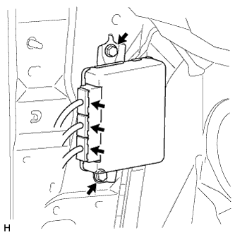

ЭБУ УПРАВЛЕНИЯ ПОДВЕСКОЙ > СНЯТИЕ |
| 1. ОТСОЕДИНИТЕ ПРОВОД ОТ ОТРИЦАТЕЛЬНОГО ВЫВОДА АККУМУЛЯТОРНОЙ БАТАРЕИ |
| 2. СНИМИТЕ ПОДУШКУ БЕЗОПАСНОСТИ № 1 ДЛЯ ЗАЩИТЫ НОГ В СБОРЕ (для моделей с левосторонним рулевым управлением) |
| 3. СНИМИТЕ ДВЕРЦУ ПЕРЧАТОЧНОГО ЯЩИКА В СБОРЕ (для моделей с правосторонним рулевым управлением) |
| 4. СНИМИТЕ ЭБУ УПРАВЛЕНИЯ ПОДВЕСКОЙ |
|  |
Отсоедините 3 разъема.
Выверните 2 болта и снимите ЭБУ управления подвеской.